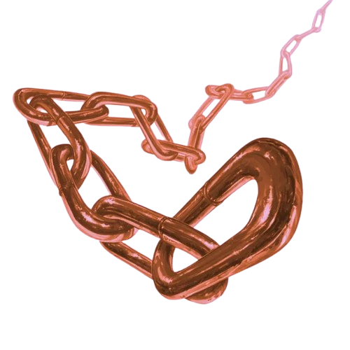

Juan
Identidade
- Interpretado: Isaac
- Raça: Draconato
- Nivel: 2
- Idade: 15
- Altura: 1,80
- Classe: Mago
- Antecedência: Sábio
- Associação: Guilda Fogo Eterno
- Hobbs: Estudar magia e buscar por relíquias
- Personalidade: Esperto, cuidadoso e orgulhoso
Historia
um jovem draconato de escamas bronze que passou anos estudando magia na Torre dos Arcanistas de Prata, Lá, tornou-se aprendiz de um mago excêntrico e carismático chamado Patolino, Certo dia, Patolino partiu em uma expedição mágica e nunca mais retornou, As autoridades da torre rapidamente encerraram o caso como um "acidente", mas Juan não aceitou essa explicação, Com o coração dividido entre a perda e a curiosidade, ele abandonou a torre com seu grimório, seu cajado e a esperança de encontrar respostas, Agora, Juan encara o mundo real pela primeira vez, Tudo é novo: tavernas cheias de vozes, mercadores sorrateiros, guerreiros barulhentos e ameaças escondidas nas sombras, Mesmo sendo um iniciante, ele acredita em fazer o bem e ajudar os inocentes, ainda que para isso precise quebrar algumas regras.Aparencia
Escamas: Escamas bronzes e reluzentes, suas escamas têm um brilho metálico intenso, simbolizando poder e nobreza
Cabeça: Cabeça com chifres negros curvados para trás, e uma expressão austera, quase majestosa. Os olhos semicerrados indicam confiança, serenidade e foco.
Cabelos: Embora incomum para draconatos, este possui uma crina ou juba escura que acompanha a linha da cabeça e nuca
Roupa: veste um sobre tudo detalhado e bem feito
Postura: Altivo e firme, transmite autoridade natural
Status e aptidões
-
Vida [11]
-
Defesa [13]
-
força [+1]
-
destreza [+3]
-
constituição [+2]
-
inteligencia [+7]
-
sabedoria [+5]
-
carisma [+2]
Raça: Draconato
Aumento no Valor de Habilidade. Seu valor de
Força aumenta em 2 e seu valor de Carisma aumenta em
1.
Deslocamento Seu deslocamento base de caminhada
é 9 metros.
Ancestral Dracônico. Você possui um ancestral
dracônico. Escolha um tipo de dragão da tabela Ancestral
Dracônico. Sua arma de sopro e resistência a dano são
determinadas pelo tipo de dragão,(sendo juan do tipo eletrico).
Arma de Sopro. Você pode usar uma ação para
exalar energia destrutiva. Seu ancestral dracônico
determina o tamanho, formado e tipo de dano que você expele.
Resistência a Dano. Você possui resistência ao tipo
de dano associado ao seu ancestral dracônico
Classe: Mago
Recuperação Arcana
Você aprendeu como recuperar um pouco de sua energia
mágica estudando seu grimório.
Uma vez por dia, quando
você terminar um descanso curto, você pode escolher
espaços de magia gastos para recuperá-los.
Os espaços
gastos a serem recuperados podem ser de qualquer
combinação de níveis de magia, desde que sejam iguais ou
inferiores a metade de seu nível de mago (arredondado
para cima) e nenhum deles seja de 6º ou superior.
Armas
| Arma | Descrição |
|---|---|

Gota'dgua |
um cajado com uma esfera azul
dano: 1d6+for ou 1d8 se segurado com as duas mãos. |
|

Corrente Da Mente viva |
correntes da mente viva
dano: para seres vivos 2d8+int para seres não vivos 2d4. |
Magias
Truques
- Truque 1: Luz, Você toca um objeto que não tenha mais 3 metros [10 feet] em qualquer dimensão. Até a magia acabar, o objeto emite luz plena num raio de 6 metros [20 feet] e penumbra por 6 metros [20 feet] adicionais. Cobrir o objeto completamente com alguma coisa opaca bloqueará a luz. A magia termina se você conjura-la novamente ou dissipa-la com uma ação.
- Truque 2: Raio de Gelo, Um raio frigido de luz azul clara parte em direção de uma criatura, dentro do alcance. Realize um ataque à distância com magia contra o alvo. Se atingir, ele sofre 1d8 de dano de frio e seu deslocamento é reduzido em 3 metros [10 feet] até o começo do seu próximo turno.
- Truque 3: Prestidigitaçaõ, Você cria um efeito mágico dentro do alcance. Se você conjurar essa magia várias vezes, pode ter até três de seus efeitos não instantâneos ativos ao mesmo tempo.
- Truque 4: N/A
- Truque 5: N/A
Magias 1
- Magia 1: Névoa Obscurecente, Você cria uma esfera de 6 metros de raio [20-foot radius] de névoa, centrada num ponto, dentro do alcance. A esfera se espalha, dobrando esquinas, e a área dela é de escuridão densa. Ela permanece pela duração ou até um vento moderado ou mais rápido (pelo menos 15 quilômetros [10 miles] por hora) dispersa-la.
- Magia 2: Detectar Magia , Pela duração, você sente a presença de magia a até 9 metros de você. Se você sentir magia dessa forma, você pode usar sua ação para ver uma aura suave em volta de qualquer criatura ou objeto visível, na área que carrega magia, e você descobre a escolha de magia, se houver uma.
- Magia 3: Corrente da Mente Viva , correntes magicas que saem do seu grimório, podem ser deixadas sempre ativas se preferir, elas causam mais danos a criaturas vivas (2d8) mais os mortos vivos não sofrem muito dano (2d4)
- Magia 4: N/A
- Magia 5: N/A
Magias 2
- Magia 1: N/A
- Magia 2: N/A
- Magia 3: N/A
- Magia 4: N/A
- Magia 5: N/A
Magias 3
- Magia 1: N/A
- Magia 2: N/A
- Magia 3: N/A
- Magia 4: N/A
- Magia 5: N/A
Magias 4
- Magia 1: N/A
- Magia 2: N/A
- Magia 3: N/A
- Magia 4: N/A
- Magia 5: N/A
Magias 5
- Magia 1: N/A
- Magia 2: N/A
- Magia 3: N/A
- Magia 4: N/A
- Magia 5: N/A
Magias 6
- Magia 1: N/A
- Magia 2: N/A
- Magia 3: N/A
- Magia 4: N/A
- Magia 5: N/A
Magias 7
- Magia 1: N/A
- Magia 2: N/A
- Magia 3: N/A
- Magia 4: N/A
- Magia 5: N/A
Magias 8
- Magia 1: N/A
- Magia 2: N/A
- Magia 3: N/A
- Magia 4: N/A
- Magia 5: N/A
Magias 9
- Magia 1: N/A
- Magia 2: N/A
- Magia 3: N/A
- Magia 4: N/A
- Magia 5: N/A